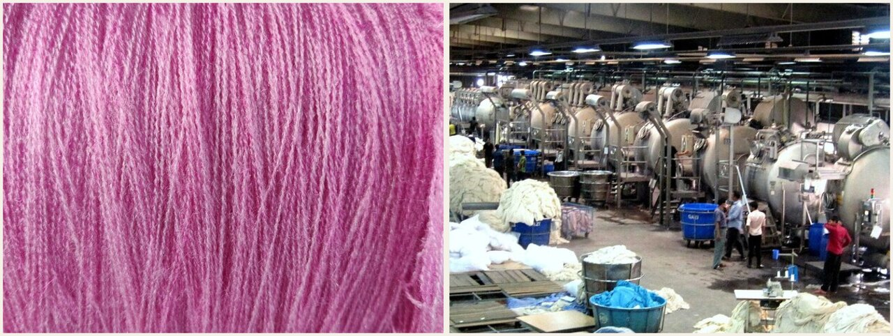
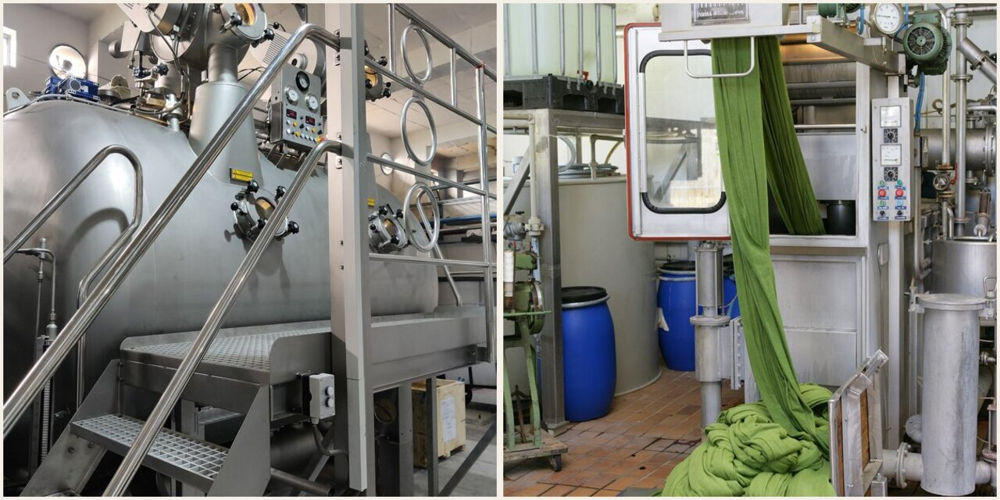
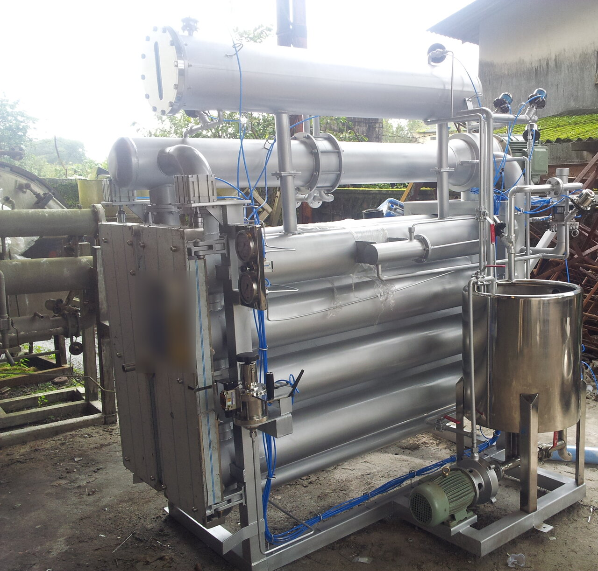
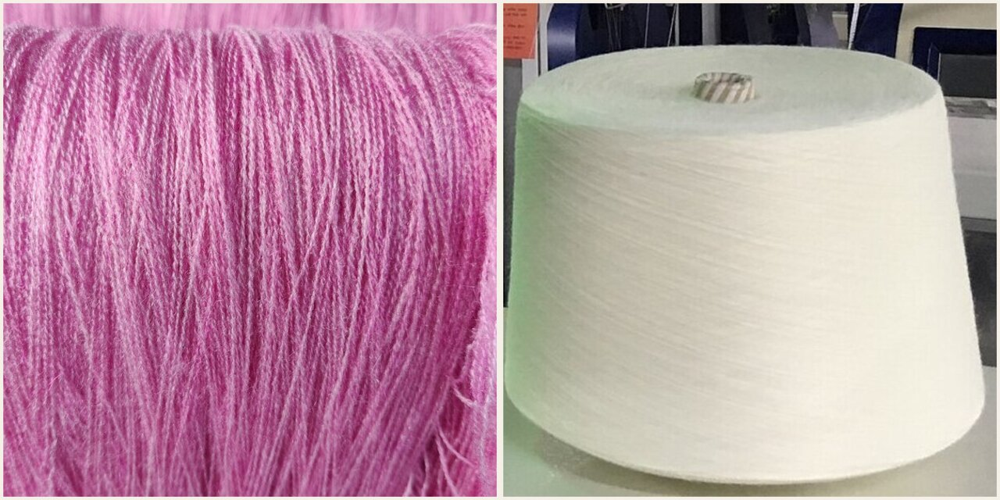

교육자료 · 염색
색을 언제 넣느냐. 실 먼저(선염), 원단 짠 뒤(후염), 옷 만든 뒤(가먼트). 무슨 물감인지는 염료 페이지. 온도 숫자는 공개된 업계 범위이지 공장 셋팅이 아니다.

먼저 세 가지만 본다. 원사이드는 선염이 아니다(단면·표리이색 샵 말). 온도는 공개 범위이지 공장 셋팅이 아니다.
짜기 전 실에 색. 면 양산=패키지(치즈). 타래(hank)·머프도 사염 형태. 스트라이프·헤더·카티온P.
생지 짠 뒤 한 색. 포염. 생지(그레이지) 짠 뒤 제트·소프트플로 배기. 솔리드. 가먼트는 후염 하위(봉제 후).
선염이 아니다. 샵에서 단면·표리이색(한쪽 면만/앞뒤 색이 다름)을 말할 때 쓰는 말. 배기 후염은 보통 양면이 같이 먹는다. 작지 표기를 본다.
| 칸 | 동의어 | 영어 | 언제 | 주의 |
|---|---|---|---|---|
| 선염 | 사염 | yarn-dye (YD) | 편직전, 실 | 패키지(치즈) |
| 후염 | 포염 | piece-dye (PD) | 편직후, 생지 | 솔리드 배기 |
| 원사이드 | 단면·표리이색 | one-side / face | 작지 확인 | 선염(실 먼저)과 다름. 배기 후염은 보통 양면 |
원착·원면·톱은 시점 그림에 있다. 본선 3칸과 섞지 않는다.
원사이드는 샵 말 = 단면·표리이색. 선염·사염과 다른 말. 작지 표기를 본다.
공개된 업계 범위. 염료 브랜드·설비·액비마다 다르다. 공장 프로그램 셋팅·현장 온도라고 쓰지 않는다. 셋팅=염색기 목표온도. 텐터 열고정(175–180 인용 범위)과 섞지 않는다.
| 사종 | 염료 | 먹는 온도(고착 홀드) | 셋팅 메모 | 주의 |
|---|---|---|---|---|
| CM/면 코마 | 리액티브 VS(KN) | 약 60°C | 배기 제트/패키지 동일 화학 | 알칼리 고착. 공개 자료 KN≈60 |
| 면 | 리액티브 HE/MCT | 약 80°C | 핫타입 | VS 60과 레시피 섞지 않는다 |
| 면 | 리액티브 냉염 DCT | 20–40°C | 거의 안 씀 | 참고 |
| 면 | 다이렉트 | 90–100°C | 저가 | 리액티브 대체가 추세 |
| 면 흑 | 설퍼 | 90–95°C | 환원 | 방류 이슈 |
| 레이온 | 리액티브 | 면과 비슷 | 알칼리 약하게 | 강도 주의 |
| P 레귤러 폴리 | 디스퍼스 HT | 약 130°C 가압 | 패키지 기 설계 ≤135 | 상압 캐리어는 별도 |
| P/스판 혼방 | 디스퍼스 | 공개 주의 120–125°C 범위가 흔하다 | 공개 범위 | 엘라스테인 열손상. 공장 기준이 아니다 |
| 카티온P / CDP | 카티온(염기성) | 약 100°C pH 4–4.5 | 레귤러 폴리 130과 다름 | 면 솔리드 염료가 아니다. 선염표 헤더 |
| C/P 혼방 | 디스퍼스+리액티브 | 폴리 130 다음 면 60 또는 원배스 | 두 단계 또는 원배스 | 두 섬유 조건이 다름 |
| 나일론 | 산성 | 98–100°C 상압 | 상압 | BASIC이 아니다 |
| 아크릴 | 카티온 | 95–100°C | 카티온 배기 | CDP와 염료 계열은 같으나 섬유 다름 |
| 원착 폴리 | 안료 칩 | 욕온 없음 | 방사 전 | 방사 전 |
승온: 공개 1–2°C/min 전후. 공장 승온은 이 페이지로 정하지 않는다.
패키지: 면 패키지와 면 포염은 염료 온도는 같고 순환(안↔밖)이 다르다. 폴리 패키지는 HTHP.
면·레이온 니트 솔리드는 반응성 염료를 제트·소프트플로에서 배기(exhaust)한다. 우븐 대량은 패드·CPB. 공개 업계: Jet/CPB·배기 리액티브가 면 니트 솔리드에 흔하다.
선염 스트라이프는 실을 먼저 염색한다. 면 양산은 치즈를 스핀들에 꽂는 패키지 염색.
분광측색(CCM, D65)으로 랩딥 승인 후 벌크. 육안만으로 기기를 열지 않는다. 분광측색·랩딥 승인 후 벌크가 현장 관행.
산성염료를 BASIC DYE(염기성)라고 쓰면 틀린다. Acid dye = 울·나일론·실크. Basic/cationic = 아크릴·CDP(카티온P). 카티온P는 선염표 예에서 헤더용으로 나온다. 면 솔리드와는 별개.
욕비(M:L) 공개 범위는 면 리액티브 배기 약 1:6~1:12. ZDHC MRSL·OEKO-TEX는 바이어가 요구할 때의 계약 언어. 공장 기본 숙제·액비 목표치는 작지·계약을 본다. 이 페이지로 공장 규격을 정하지 않는다.
염료 종류·붙는 방식의 세부는 염료 페이지. 이 표는 염색 시점에서 같이 보는 요약이다.
| 지금 말 | 영어 | 섬유 | 메모 |
|---|---|---|---|
| 리액티브 | Reactive | 면·레이온·티셔츠 | 공유결합. 배기·패드배치·CPB. |
| 다이렉트 | Direct | 면(저가) | 면은 리액티브로 대체되는 추세. |
| 배트 / 인디고 | Vat / indigo | 데님 경사 | 환원→염착→산화. 링다잉. |
| 설퍼 | Sulfur | 흑색 면 | 단가 유리, 방류 이슈. |
| 산성 | Acid | 울·나일론·실크 | BASIC이 아니다. |
| 카티온 / 염기성 | Basic / cationic | 아크릴·CDP | 선염표 카티온P = 헤더. 면 솔리드와 별개. |
| 디스퍼스 | Disperse | 폴리에스터 | HT 약 130°C 또는 원착. |
| 아조익 / 나프톨 | Azoic | 면(옛 방식) | 신규 오더 거의 없음. |
칩에 안료. 물 거의 없음. 폴리 원착사.
섬유 상태 염색. 멜란지 원료.
소모 슬라이버. 균일 혼방.
치즈·타래·머프. 면 양산은 패키지.
티셔츠 니트 주력. 제트·소프트플로.
봉제 후 드럼. SKU는 줄고 워싱은 산다.
| 옛 말 | 지금 | 영어 | 근거 |
|---|---|---|---|
| 산성 = BASIC | 산성 = acid | Acid dye | 산성과 염기성은 다른 염료 |
| 반응성 | 리액티브 | Reactive | 현장어: 반응성 염료 / Jet·CPB |
| 침염 | 배기 (exhaust) | Exhaust / batch | 통화: 배기(배치) vs 연속 |
| 선염 | 사염 / 패키지 | Yarn-dye / package | 실 상태 염색: 패키지·타래 |
| 생지 | 그레이지 | Greige | 편직 후 미가공 |
| 욕비 | M:L / 저욕비 | Liquor ratio | 공개 1:6~1:12. 목표치는 작지·설비 |
| RSL만 | ZDHC MRSL + RSL | ZDHC / OEKO-TEX | 바이어 요구 시. 기본 숙제로 보지 않는다 |
| 원사이드염색 | 단면·표리이색 (샵) | one-side / face | 선염이 아니다. 작지 확인 |
염색은 물에 녹은 염료가 섬유로 옮겨 가 붙는 일이다. 섬유와 염료의 짝, 농도, pH(산·알칼리 정도), 욕비(물의 양), 약품에 따라 붙는 모습이 달라진다. 그래도 큰 흐름은 세 단계다.
염색 세 단계: ① 염료가 물(염액) 속에 떠 있다 → ② 염료가 섬유 겉에 모여 붙는다(흡착) → ③ 섬유 속으로 스며들어 자리 잡는다(확산·고착).
염액 속 염료가 섬유 겉까지 이동한다. 액을 잘 돌려야 고르게 다가간다.
섬유 겉에 달라붙는다. 이 단계는 아주 빠르다.
섬유 속으로 천천히 들어간다. 가장 느린 단계라 전체 염색 속도를 정한다.
반응 염료는 알칼리를 넣어 섬유와 화학 결합을 시키고, 배트(인디고) 염료는 환원해 넣은 뒤 공기로 산화시켜 섬유 안에 가둔다. 이 고착 단계가 하나 더 있다.
염료는 사슬이 느슨한 비결정 영역으로 들어간다. 그 안에서 염료와 결합할 수 있는 자리를 염착좌석이라고 한다. 섬유 구조는 섬유 페이지.
선염은 원단을 만들기 전에 색을 넣는 방법이다. 원면·톱·토우·실 상태에서 염색한다. 보통 정련·표백 같은 전처리부터 염색, 오일링(실을 매끄럽게 하는 처리)까지 한 기계에서 한다.
실 염색(사염)은 타래, 치즈, 머프, 정경한 날실 상태로 한다. 포염보다 색 무늬를 다양하게 낼 수 있다. 원면·톱 염색보다 완성까지 기간이 짧아 여러 색을 조금씩 만드는 주문에 맞다.
치즈 염색 흐름: ① 실 감기(와인딩, 구멍 뚫린 관에 감음) → ② 기둥(캐리어)에 끼우기 → ③ 정련·표백 → ④ 염색(염액이 실 사이로 돈다) → ⑤ 수세·탈수 → ⑥ 건조 → ⑦ 포장. 실 염색기 겉모습은 아래 사진을 본다.
구멍이 많은 관(튜브)에 실을 비교적 단단하게 감는다. 이것을 치즈(또는 콘)라고 한다. 염액을 실 층 사이로 돌려 색을 넣는다.
한 번에 많이 한다. 비용이 덜 든다. 품질이 고르게 나오기 쉽다.
감는 단단함이 고르지 않으면 안쪽·바깥쪽 색이 달라진다(균염 불량). 견뢰도 문제도 생길 수 있다. 그래서 감기 조정이 중요하다.
침염은 염액에 원단이나 실을 담가 한 가지 색을 얼룩 없이 고르게 내는 방법이다. 현장에서는 배기(exhaust)라고도 한다. 염색기는 원단이 움직이는 방식과 염액이 도는 방식으로 나눈다.

원단을 고리처럼 이어 롤러로 천천히 돌리며 염액에 담근다. 원단에 힘이 적게 간다.
펼친 원단을 두 롤 사이에서 왕복하며 염액을 지나게 한다. 우븐에 많이 쓴다.
물살로 원단을 밧줄 모양으로 돌린다. 니트 포염에 많이 쓴다. 원단 종류에 맞는 기계를 고른다.
| 염료 | 주로 쓰는 섬유 | 쉬운 말로 염법 |
|---|---|---|
| 직접 염료 (direct) | 면·레이온 | 물에 녹여 소금(염)을 넣고 데워 염색한다. 소금이 섬유에 붙는 것을 돕는다. |
| 반응 염료 (reactive) | 면·레이온 | 소금과 알칼리를 넣으면 염료가 섬유와 화학 결합(공유결합)을 한다. 염료 종류마다 알맞은 온도가 다르다. |
| 분산 염료 (disperse) | 폴리에스터 | 물에 녹지 않는 염료를 잘게 흩어 놓는다. 고온에서 섬유 속으로 퍼져 들어간다. |
| 산성 염료 (acid) | 나일론·울·실크 | 물에 녹이고 산으로 pH를 맞춘 뒤 온도를 올려 염색한다. |
직접성: 알칼리 넣기 전, 염료가 면에 얼마나 끌리는지.
이염성: 염색 중 염료가 옮겨 다니며 얼룩을 고르게 펴 주는 힘.
반응성: 알칼리를 넣은 뒤 섬유와 얼마나 잘 결합하는지.
고착률: 소핑(비누 세척)으로 안 붙은 염료를 씻어 낸 뒤 남는 양. 진하기와 견뢰도를 좌우한다.
세 가지 색을 섞어 쓸 때는 온도가 올라가며 비슷한 속도로 먹는 염료끼리 고른다. 온도별로 염색한 시료와 남은 염액으로 다시 염색한 시료를 나란히 보면 알 수 있다. 짝이 맞아야 얼룩이 덜 생긴다.
침염이 원단 전체를 한 색으로 물들인다면, 날염은 염료나 안료를 끈끈한 풀(호)에 섞어 원단 일부에만 찍어 무늬를 낸다. 찍은 뒤 증기(증열)나 열로 색을 고정하고, 물로 씻고 말린다. 원단·의류 프린트 설비 이야기는 프린트 페이지.
날염 세 방식: 직접 날염(흰 원단에 색 풀을 찍음) · 발염(바탕을 먼저 물들이고 색을 빼는 풀로 무늬를 뺌, 풀에 다른 염료를 넣으면 그 자리에 새 색) · 방염(먼저 막는 풀을 찍고 염색해 그 자리만 색이 안 듦).
흰 원단이나 옅은 색 원단 위에 색 풀을 바로 찍는다. 가장 흔한 방법이다.
바탕색을 먼저 물들인다. 그 위에 색을 빼는 약품(주로 환원제)이 든 풀을 찍어 하얗게 뺀다. 풀에 다른 염료를 넣으면 그 자리에 새 색이 난다. 바탕 염료는 잘 빠지는 종류를 쓴다.
염료가 못 들어가게 막는 풀을 먼저 찍고 바탕을 물들인다. 막은 자리만 색이 안 든다. 바탕을 먼저 찍고 말린 뒤 막는 풀을 찍는 방법도 있다.
| 찍는 방법 | 어떻게 | 특징 |
|---|---|---|
| 손 날염 (hand printing) | 판 위에 원단을 펴고 틀을 놓아 손으로 밀어 찍는다. 한 칸씩 건너뛰며 찍고 돌아와 빈 칸을 찍는다. | 고급·소량에 맞다. 느리다. |
| 주행식 날염 | 손 날염과 같지만 밀기와 틀 옮기기를 기계로 한다. | 손보다 빠르다. |
| 평판 자동 스크린 (flat screen) | 스크린은 제자리에서 위아래로만 움직인다. 원단이 벨트를 타고 한 칸씩 나아간다. | 정확한 무늬 맞춤. |
| 롤러 날염 (roller) | 무늬를 새긴 구리 롤러로 원단을 눌러 찍는다. 롤러 겉의 남는 풀은 칼날(닥터)로 긁어낸다. | 가는 선에 좋다. 지금은 드물다. |
| 로터리 스크린 (rotary) | 원통형 금속 스크린이 돌면서 찍는다. | 빨라서 대량 생산에 많다. |
| 전사 날염 (transfer) | 종이·필름에 먼저 무늬를 찍고, 원단에 대고 열·압력으로 옮긴다. | 폴리에스터에 많다. |
견뢰도는 색이 얼마나 오래 버티는지다. 햇빛·빨래·마찰·땀·물·열에 색이 바래거나(변퇴색) 다른 천에 묻어나는지(오염) 본다. 시험법·합격 등급은 바이어 스펙과 최신 규격을 따른다. 자세한 것은 견뢰도 페이지.
| 견뢰도 | 무엇을 보나 | 어떻게 시험하나(쉬운 말) |
|---|---|---|
| 일광 (light) | 햇빛에 색이 바래는 정도 | 태양광과 비슷한 인공 빛(제논 램프)에 쬔다. 1~8급 표준 청색 천과 함께 쬐어 비교한다. 급수가 높을수록 강하다. |
| 세탁 (washing) | 빨래할 때 바램과 묻어남 | 시료에 흰 천(여러 섬유를 이은 천)을 붙여 비눗물·쇠구슬과 함께 통에 넣고 돌린다. 회색 표준 색표로 1~5급 판정한다. |
| 마찰 (rubbing / crocking) | 문질렀을 때 묻어남 | 마른 흰 면천과 젖은 흰 면천으로 시료를 정해진 횟수만큼 문지른다. |
| 땀 (perspiration) | 땀에 바램과 묻어남 | 산성·알칼리성 인공 땀에 담갔다가 판 사이에 눌러 체온 정도에서 둔다. 속옷·작업복에 중요하다. |
| 물 (water) | 물에 젖었을 때 | 증류수, 수영장 염소물, 바닷물 시험이 있다. 수영복은 염소물·바닷물도 본다. |
| 열·다림질 (heat / hot pressing) | 다림질·열에 색 변화와 옮겨 묻음 | 정한 온도의 열판에 잠깐 대거나 눌러 본다. 마른·약간 젖은·젖은 상태로 나눈다. 시험 직후와 몇 시간 뒤 두 번 본다. |
세탁 견뢰도 시험: 시료에 흰 천을 붙여 쇠구슬과 함께 시험 통에 넣고 돌린 뒤, 색 빠짐과 흰 천에 묻은 색을 회색 단계표로 본다.
땀 견뢰도 시험: 인공 땀 용액에 적신 시료와 흰 천을 판 사이에 눌러 두었다 말린 뒤, 흰 천에 색이 묻은 정도를 본다.
일광 표준 청색 천은 급수가 하나 오를 때마다 대략 두 배 오래 견디도록 만든다. 시험 조건 숫자(온도·시간·구슬 수)는 규격 판본마다 다르다. 이 페이지로 정하지 않는다.
색은 빛에 따라 달라 보인다. 랩딥(색 시안)을 볼 때 어떤 빛 아래서 보는지가 중요하다.
메타메리즘: 낮빛 아래에서는 두 견본이 같은 색으로 보이는데, 매장 조명 같은 다른 빛 아래에서는 한쪽만 달라 보이는 것. 그래서 색은 바이어가 정한 광원 두세 개 아래에서 함께 본다.
한 빛에서는 같은 색으로 보이는데 다른 빛에서는 달라지는 현상이다. 쓴 염료 조합이 서로 다를 때 잘 생긴다. 회색·베이지·어두운 색에서 흔하다.
색 비교함(라이트 박스)에서 바이어가 정한 주 광원과 보조 광원 아래 차례로 본다. 낮빛(D65)이 기본인 경우가 많고, 매장 형광등(TL84 또는 CWF)과 백열등(A)을 보조로 쓰기도 한다. 광원 지정은 바이어 스펙을 따른다.
사람마다 색을 보는 눈이 조금씩 다르다. 그래서 측색기(CCM) 수치와 정해진 광원 아래 눈 판정을 함께 쓴다.
한 번에 같이 염색한 묶음이다. 같은 색 이름이라도 로트가 다르면 색이 조금씩 다를 수 있다.
한 벌 안에서 몸판·소매가 다른 로트면 색이 달라 보인다. 원단은 로트·롤 번호로 구분해 두고, 같은 로트끼리 재단한다.
입고 원단은 롤마다 색을 비교해 비슷한 것끼리 묶는다(셰이드 구분). 이 결과를 재단 계획에 넘긴다.
측색기는 기준 색과의 차이를 ΔE 값으로 보여 준다. 작을수록 가깝다. 얼마까지 허용할지는 바이어가 정한다.
참고: 메타메리즘(위키백과 영문) · 염색 로트(위키백과 영문) · 원단 색·폭 구분과 수축 보고 예
| 현장 말 | 쉬운 뜻 |
|---|---|
| B/W (Bleached White) | 표백하고 형광 처리한 흰 원단 |
| B/O (Boiling Off) | 정련까지만 한 원단 |
| P/D (Plain Dyeing) | 한 색으로 침염한 원단 |
| W/R · W/P | 발수 가공 · 방수 가공 |
| B/T (Beaker Test) | 요청 색을 맞추려고 비커에서 먼저 해 보는 염색 시험 |
| S/O (Strike Off) | 날염 시험 찍기 |
| CCM | 색을 기계로 재고 맞추는 측색 장치 |
| OWF | 원단 무게 대비 염료·약품 양(%) |
| 정련 · 표백 | 생지의 기름·풀·불순물을 빼는 일 · 섬유 속 색소를 빼 하얗게 하는 일 |
| 머서라이징 (실켓) | 진한 가성소다에 담가 광택을 주고 염료가 잘 먹게 하는 가공 |
| 모소 (singeing) | 겉면 잔털을 불로 태워 표면을 깨끗하게 하는 일 |
| 캐리어 (carrier) | 폴리에스터를 100°C 이하에서 염색할 때 돕는 약품 |
| 농염제 | 색이 더 진하고 깊어 보이게 하는 약품 |
| 소포제 | 약품·염료 거품을 없애는 약품 |
| 증열(스티밍) | 날염 뒤 증기를 쐬어 염료를 고정하는 일 |
| 스카차 | 밧줄처럼 꼬인 원단을 넓게 펴는 기계 |
| 연폭 | 원단 끝과 끝을 이어 붙이는 일 |
| 포속 | 염색기 안에서 원단이 도는 속도 |
| 감량 가공 | 폴리에스터를 약품으로 조금 녹여 무게를 줄이고 부드럽게 하는 가공 |
| 래피드 염색기 | 염액을 빠르게 돌려 염색 시간을 줄인 침염 기계 |
| 거품 염색 | 물을 아주 적게 쓰고 염액을 고운 거품으로 만들어 원단 위에 고르게 펴는 염색 |
| 축소 | 폭·밀도를 바꾸고 촉감을 부드럽게 하려고 원단을 줄이는 공정 |
| 자치 · 난단 | 재단하고 남은 짧은 원단(10야드 이하) · 그보다 길지만 한 롤에 못 미치는 원단 |
| OWS | 염액 양 대비 약품 양 |
| CCK | 염료·약품을 자동으로 달아 주는 장치(Computer Color Kitchen) |
| 결점 이름 | 어떤 모습 |
|---|---|
| 불균염 · 무라 | 색이 고르지 않고 얼룩져 보인다 |
| 리스팅 (listing) | 원단 가장자리와 가운데 색이 다르다 |
| 변사 얼룩 | 양쪽 가장자리가 가운데보다 연하거나 진하다 |
| 절내 색차 · 색차 | 한 롤 안에서, 또는 로트끼리 색이 다르다 |
| 염료 스팟 | 염료 덩어리가 점처럼 묻었다 |
| 쵸크 마크 | 분필로 그은 것 같은 흰 줄이 생겼다 |
| 로프 주름 · 냉각 주름 | 제트 염색기에서 원단이 엉키거나 식으면서 생긴 주름 |
| 접힘 주름 · 시와 | 장력·압력으로 접혀 생긴 주름, 고르지 않은 장력으로 생긴 잔주름 |
| 핀 홀 | 물·원면의 쇠 성분 때문에 표백 뒤 바늘구멍 같은 구멍이 생겼다 |
| 사행 | 우븐: 씨실이 휘거나 기울었다(bow/skew). 니트 옆선이 돌아가는 것은 비틀림(후가공 페이지). |
| 핀 빠짐 · 변사 파손 | 텐터 핀에서 원단이 빠져 폭이 들쭉날쭉하다 · 가장자리가 찢어졌다 |
| 형 맞춤 불량 | 날염 무늬끼리 자리가 안 맞아 흰 틈이나 겹침이 생겼다 |
| 형 막힘 · 색호 튐 | 스크린이 막혀 흐리거나 흰 점이 생겼다 · 색 풀이 튀었다 |
| 판자 얼룩 | 국내 현장에서 쓰는 말. 날염에서 나뭇결 같은 무늬 얼룩이 생겼다 |
| 버핑 줄 | 피치 스킨(사포 긁기) 뒤 줄이 생겼다. 사포를 제때 안 바꾸거나 원단에 잔주름이 있을 때 생긴다 |
| 산포 주름 | 기계로 미리 줄이는 방축 가공(산포라이징) 중에 생긴 주름 |
| 미짐 | 밀도가 성기거나 힘이 약해 조직이 갈라지거나 벌어졌다 |
| 오염 · 먼지 오염 | 기계 등에서 때가 묻었다 · 정전기로 먼지가 붙었다 |
| 마찰 흠 | 기계와 원단, 원단끼리 비벼져 겉이 긁혔다 |
패키지(치즈) 염색기 속: 가운데 구멍 뚫린 기둥(스핀들)에 치즈를 쌓아 끼우고, 펌프가 염액을 기둥 안쪽에서 바깥쪽으로, 또 반대로 번갈아 밀어 실 사이로 돌린다.


공개 교육 영상 링크. 글 링크만 둔다.
외부 영상은 제3자 콘텐츠. 공장 레시피로 쓰지 않는다.
이 페이지 숫자로 공장 규격을 정하지 않는다. 작지·바이어 스펙을 본다.
산성=울/나일론. 염기성/카티온=아크릴·CDP.
공유결합 리액티브. 배기 또는 CPB.
면 실 양산 선염은 구멍 난 관에 감은 패키지(치즈)를 염색기에 넣어 한다.
수업용 선염표 예. 헤더용 CDP, 면 솔리드와 별개.
공개 업계 범위일 뿐. 설비·목표치는 작지·설비를 본다.
선염 YD=실을 먼저. 후염 PD=생지(그레이지) 후 제트·소프트플로. 가먼트는 봉제 후, 후염 하위.
카티온P / CDP는 카티온(염기성) 약 100°C pH 4–4.5. 레귤러 폴리는 디스퍼스 HT 약 130°C.
원사이드=단면·표리이색 샵 말. 선염(사염)과 다르다. 배기 후염은 보통 양면. 작지를 본다.
공개된 업계 범위. 염료 브랜드·설비·액비마다 다르다. 공장 프로그램 셋팅·현장 온도라고 쓰지 않는다. 이 페이지로 공장 규격을 정하지 않는다.
VS(KN) 약 60°C, HE/MCT 약 80°C 핫타입. 레시피 섞지 않는다.
겉에 붙는 것은 순간이다. 속으로 퍼지는 단계가 가장 느려 염색 속도를 정한다.
발염 = 빼기. 방염 = 먼저 막기. 직접 날염 = 흰 바탕에 바로 찍기.
염액이 실 층을 고르게 지나야 한다. 감는 단단함 조정이 중요하다.
빛에 따라 같아 보였다 달라지는 현상이 메타메리즘이다. 여러 광원 아래에서 본다.
로트마다 색이 조금 다를 수 있다. 한 벌 안에서 로트를 섞지 않는다.